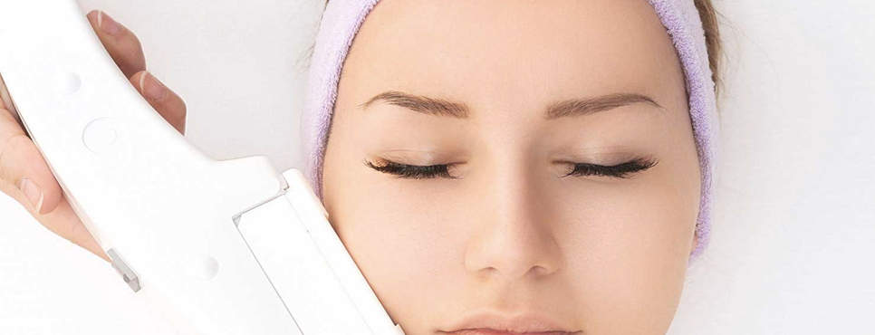

Полезные советы о красоте, здоровье и не только
Секреты красоты Клеопатры
Еще в Древнем Египте, Греции и Риме женщины использовали маски для лица, чтобы сохранить свою молодость и красоту. Женщины всегда стремились придать коже лица нежный цвет и загадочное сияние. У каждой женщины были свои тайные рецепты. Главный же секрет красоты – это королевский бархат вашей кожи лица и тела.
О красоте египетской царицы Клеопатры ходят легенды. Она вошла в историю не только как могущественная царица Египта, но и как символ женственности, очарования, красоты.
Как свидетельствует история, Клеопатра любила делать маски для лица и выполняла этот ритуал постоянно. Ее излюбленными ингридиентами были душистый александрийский мед, жирное молоко козлиц и ослиц (не только улучшало состояние кожи, но и служило профилактикой от инфекционных заболеваний), белая глина-каолин, грязи Мертвого моря (специально завоеванного для возлюбленной Марком Антонием).
Также царица, стремясь сохранить молодость лица, ложилась спать в в золотой маске. К сожалению, последний компонент нам не очень доступен, правда, и косметологическая польза его еще полностью не доказана. Хотя, можно предположить, что эта маска имела определенный антибактериологический эффект.
Крем для лица
Царица охотно использовала крем для лица, главным компонентом которого был сок алоэ. У сока алоэ - удивительные свойства, он способен увлажнять и питать кожу, сохранять молодость клеток.
В Древнем Египте Алоэ Вера считалось целебным растением, которое дарит красоту и здоровье. Египтяне верили, что алоэ может продлить жизнь. Согласно легенде, Клеопатра применяла алоэ для омоложения кожи в виде масок. Сок растения считался «эликсиром молодости», который улучшает циркуляцию крови, увлажняет, регенерирует, устраняет морщины.
Со времен Клеопатры прошло уже более 2000 лет, сама царица давно стала легендой и уже никто точно не знает, что в ее деяниях правда, а что - вымысел. Зато мы знаем точно, что рецепты, которыми пользовалась эта знаменитая женщина, чтобы продлить свою молодость, актуальны и ныне.
Классическая маска
Царица охотно использовала крем для лица, главным компонентом которого был сок алоэ. У сока алоэ - удивительные свойства, он способен увлажнять и питать кожу, сохранять молодость клеток.
В Древнем Египте Алоэ Вера считалось целебным растением, которое дарит красоту и здоровье. Египтяне верили, что алоэ может продлить жизнь. Согласно легенде, Клеопатра применяла алоэ для омоложения кожи в виде масок. Сок растения считался «эликсиром молодости», который улучшает циркуляцию крови, увлажняет, регенерирует, устраняет морщины.
Со времен Клеопатры прошло уже более 2000 лет, сама царица давно стала легендой и уже никто точно не знает, что в ее деяниях правда, а что - вымысел. Зато мы знаем точно, что рецепты, которыми пользовалась эта знаменитая женщина, чтобы продлить свою молодость, актуальны и ныне.
Царица охотно использовала крем для лица, главным компонентом которого был сок алоэ. У сока алоэ - удивительные свойства, он способен увлажнять и питать кожу, сохранять молодость клеток. В Древнем Египте Алоэ Вера считалось целебным растением, которое дарит красоту и здоровье. Египтяне верили, что алоэ может продлить жизнь. Согласно легенде, Клеопатра применяла алоэ для омоложения кожи в виде масок. Сок растения считался «эликсиром молодости», который улучшает циркуляцию крови, увлажняет, регенерирует, устраняет морщины. Со времен Клеопатры прошло уже более 2000 лет, сама царица давно стала легендой и уже никто точно не знает, что в ее деяниях правда, а что - вымысел. Зато мы знаем точно, что рецепты, которыми пользовалась эта знаменитая женщина, чтобы продлить свою молодость, актуальны и ныне.